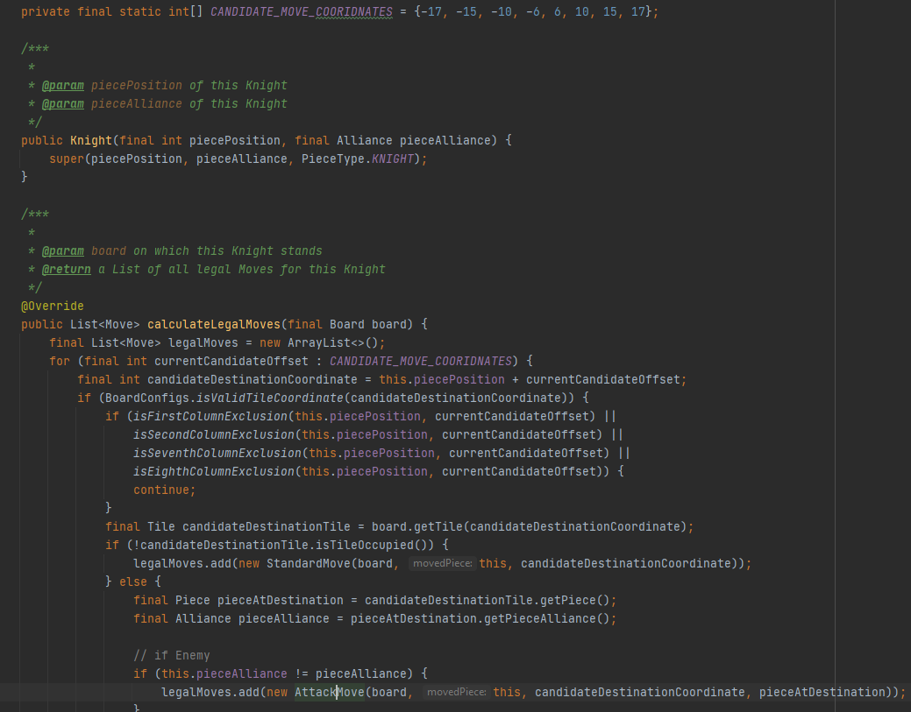

made with Java
Mein erstes eigenes Projekt, welches ich mit Java erstellt habe. Die Funktionalität ist ganz klar etwas veraltet und wird chess.com keine Konkurenz machen, aber ich habe viel über die objektorientierte Programmierung gelernt.
Die grössten Schwirigkeiten bereiteten mir die Erstellung der Figuren. Da sich die Figuren unterschiedlich bewegen können, musste ich mir eine Strategie überlegen um dieses Problem zu lösen.
Somit habe ich mir gedacht, dass ich das Spielfeld 1-Dimensional auslege (von 0-63), anschliessend die jeweils gültigen Züge für jede Figur in einem Array speichere. Somit kann z.B. der Springer sich auf die Felder (-17, -15, -10, -6, 6, 10, 15, 17), von seiner Position im Zentrum, bewegen. Schlussendlich musste ich nur noch die Ausnahmen berechnen, wenn er sich an den Ränder des Spielfeldes befindet.
Fertig gestellt habe ich es noch nicht. Ich werde noch ein GUI erstellen, auf dem das Schach anschliessend spielbar sein wird. Denn Code findet Ihr in meinem Github Profil.